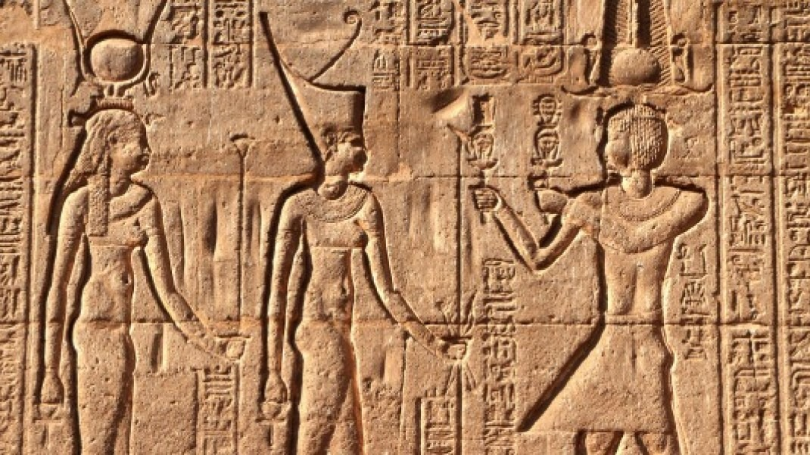

navigation
Interaction
Tools
In other project
Gothic boxwood miniatures are very small Christian sculptures produced during the 15th and 16th centuries, mostly in the Low Countries, at the end of the Gothic period of the emerging Northern Renaissance.[2] They consist of highly intricate layers of reliefs often rendered to nearly microscopic level. The miniatures are made from boxwood, Buxus, which has a fine grain and high density suitable for detailed micro-carving. There are around 150 surviving examples. The majority are spherical rosary beads (known as prayer nuts), statuettes, skulls, or coffins; some 20 are in the form of polyptychs including triptych and diptych altarpieces, tabernacles and monstrances.[3] The polyptychs are typically 10–13 cm in height. Most of the beads are 10–15 cm in diameter and designed so they could be held in the palm of a hand during personal devotion or hung from necklaces or belts as fashionable accessories. Boxwood miniatures were highly prized in the early 16th century. Their iconography, form, and utility can be linked to medieval ivory carvings, as well as contemporary illuminated miniatures, altarpieces, panel paintings, sculpture, woodcuts, and engravings. They typically contain imagery from the life of Mary, the Crucifixion of Jesus, and vistas of Heaven and Hell. Each miniature's production required exceptional craftsmanship, and some may have taken decades of cumulative work to complete, suggesting that they were commissioned by high-ranking nobles. A number of the miniatures appear to have come from a workshop led by Adam Dircksz, who is thought to have produced dozens of miniatures. Almost nothing is known about Dircksz or the artisans who produced the miniatures. Some of the original owners can be identified from markings, usually initials or coats of arms, emplaced by the sculptors.[4] Important collections of boxwood miniatures are in the Art Gallery of Ontario, in the British Museum as part of the Waddesdon Bequest, and at the Metropolitan Museum of Art, New York.[5] Because of their rarity and the difficulty in discerning their intricacy from reproductions, boxwood miniatures have not been as widely studied as other forms of
Their iconography, form, and utility can be linked to medieval ivory carvings, as well as contemporary illuminated miniatures, altarpieces, panel paintings, sculpture, woodcuts, and engravings. They typically contain imagery from the life of Mary, the Crucifixion of Jesus, and vistas of Heaven and Hell. Each miniature's production required exceptional craftsmanship, and some may have taken decades of cumulative work to complete, suggesting that they were commissioned by high-ranking nobles. A number of the miniatures appear to have come from a workshop led by Adam Dircksz, who is thought to have produced dozens of miniatures.
The miniatures are made from boxwood, Buxus, which has a fine grain and high density suitable for detailed micro-carving. There are around 150 surviving examples. The majority are spherical rosary beads (known as prayer nuts), statuettes, skulls, or coffins; some 20 are in the form of polyptychs including triptych and diptych altarpieces, tabernacles and monstrances.s